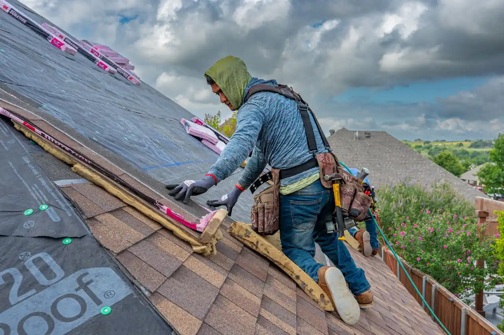
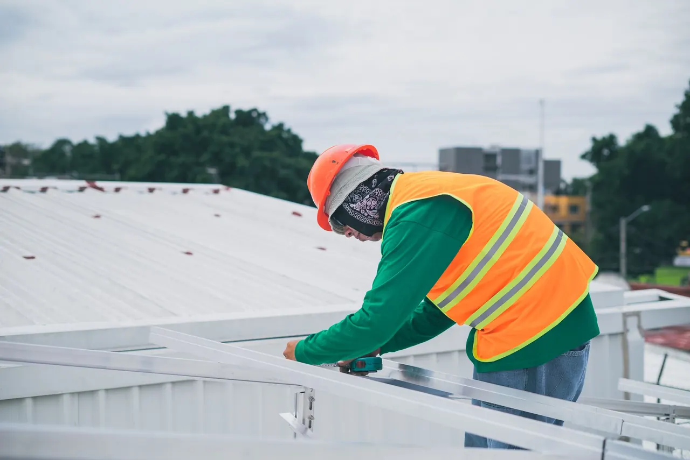

Focused arrival windows
Useful updates and clear arrival timing.

Chimney Repair Panama City FL is vital for homeowners needing to ensure their chimneys are safe and functional. With our affordable chimney repair in Panama City, you can prevent potential hazards and maintain your home's integrity.
Useful updates and clear arrival timing.
Review the approach and price before deciding.
Equipped vehicles and respectful cleanup.
Neighbors serving neighbors with follow-through.
Our chimney repair services cover a range of essential repairs to ensure your chimney is safe and functional.
A thorough inspection to identify any structural or functional issues that need addressing.
Repairing cracks and damaged bricks to restore structural integrity and prevent leaks.
Cleaning the flue to remove creosote buildup and ensure proper ventilation.
Repairing or replacing the chimney crown to prevent water damage.
Share what is happening and receive a clear next step from the local team.
Chimney Repair Panama City FL is a specialized service that addresses damage and deterioration in chimneys, ensuring they function safely and efficiently. This service often involves repairing cracks, replacing damaged bricks, and addressing issues with the chimney crown and flue.
Local Panama City customers often need chimney repair due to the area's humid climate and seasonal storms. Common issues include water damage, creosote buildup, and structural wear. Our Panama City chimney repair services can help identify and resolve these issues before they escalate.

Our team conducts a thorough inspection of your chimney to identify any issues, which typically takes about an hour.
After the inspection, we provide a detailed report outlining necessary repairs and associated costs.
We develop a tailored repair plan considering your chimney's specific needs and your budget.
Our skilled technicians perform the repairs using high-quality materials, ensuring compliance with Florida Building Code standards.
Once repairs are completed, we conduct a final inspection to ensure everything meets safety and quality standards.

Used for applying mortar and repairing brickwork in chimney structures.
Essential for safely accessing rooftop chimneys during inspections and repairs.
Used to secure flashing and other components during chimney repairs.
Ensures technician safety when working on roofs or high structures.
Involves repairing and restoring the brickwork of the chimney to prevent leaks and structural issues.
A method for cleaning the chimney flue to remove creosote and ensure safe airflow.
Applying a waterproof sealant to protect the chimney from moisture damage.

We inspect for any damage caused by wind or rain, ensuring your chimney is safe. You can rest easy knowing your chimney is secure and functional.
We assess the chimney for blockages or structural issues, providing necessary repairs. This ensures proper ventilation and a safer living environment.
We recommend regular inspections to catch potential issues early. This proactive approach saves you money on future repairs.
Chimney repair in Panama City, FL, involves unique considerations due to the local climate and building regulations. With high humidity and seasonal storms, chimneys often face water damage and deterioration. Our chimney repair services take into account the Florida Building Code compliance, ensuring all repairs are up to standard. We also understand the common issues faced by homeowners in neighborhoods like St. Andrews and Downtown Panama City, where older homes may have more significant wear and tear.
This area features many older homes that often require chimney repairs due to age-related damage.
Homes here may face unique challenges due to urban weather patterns affecting chimney integrity.
Millville's historic properties often need specialized chimney repair services to maintain their charm.
Can lead to faster deterioration of chimney materials, increasing repair needs.
Storms can cause structural damage to chimneys, necessitating timely repairs.
The chimney showed significant cracks and water damage, posing a safety risk.
After repairs, the chimney is structurally sound with a waterproof seal, preventing further damage.
Maintenance: Regular inspections every year help maintain its integrity.
Heavy creosote buildup was causing smoke to enter the home, creating a health hazard.
After a thorough cleaning, the chimney now allows for safe and efficient ventilation.
Maintenance: Annual sweeping is recommended to prevent future buildup.
The chimney crown was missing, leading to water leaks and structural issues.
A new crown was installed, effectively sealing the chimney and preventing leaks.
Maintenance: Inspect the crown during regular maintenance checks to ensure it remains intact.
Chimney repair addresses several critical issues that can affect your home's safety and efficiency.
Ignoring leaks can lead to severe structural damage and mold growth. We seal cracks and repair flashing to prevent water intrusion, protecting your home.
Excessive creosote can cause chimney fires and poor airflow. Our cleaning service removes creosote buildup, ensuring safe and efficient chimney operation.
Cracks can lead to structural instability and increased risk of collapse. We repair cracks with quality materials, restoring the chimney's strength and safety.
$180 - $450 depending on scope
Chimney repair costs in Panama City can vary based on several factors. Typical 2026 pricing ranges from $180 to $450, depending on the extent of the damage and required repairs. Factors such as the type of materials used, the complexity of the job, and any additional services can affect the overall cost.
Investing in chimney repair now can prevent costly issues in the future, making it a wise choice for homeowners.
More extensive damage requires more materials and labor, increasing costs.
Structural repairs may cost more than simple cleaning or maintenance services.
Using high-quality materials can increase the upfront cost but provides long-term savings.

With over 15 years of experience in chimney repair, our team is well-equipped to handle any chimney-related issues.
Common issues include water damage, creosote buildup, and structural cracks. Regular inspections help identify these problems early.
Most chimney repairs take between two to four hours, depending on the extent of the damage and the necessary repairs.
The average cost of chimney repair in Panama City ranges from $180 to $450, depending on the specific repairs needed.
Look for signs such as cracks in the masonry, water stains, or a strong odor from the fireplace. Regular inspections are recommended.
Not seeing your question? Our local team can help you understand urgency, scheduling and what to expect.
Ask the local team
New roof installations can complement chimney repairs, ensuring a cohesive and secure structure for your home.
View service
If your roof is aging, a roof replacement may be necessary alongside chimney repairs for optimal safety.
View service
Roof repairs may be needed if your chimney is causing leaks or other issues, ensuring your home remains watertight.
View service
Regular roof inspections can help identify potential chimney-related issues before they become serious problems.
View service
We invite you to reach out for any roofing needs. Our team is available to assist you promptly, ensuring a quick response.